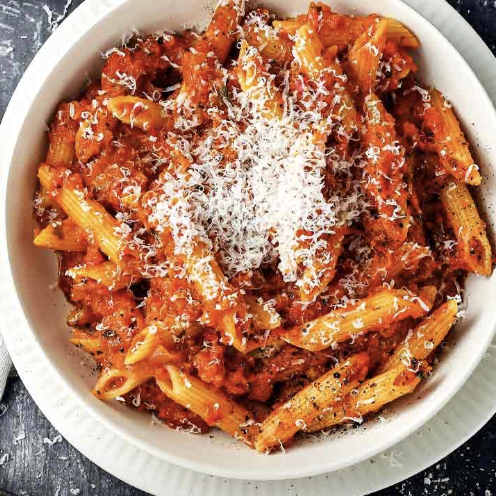

|
|
Slash's Recipes |
Pasta with Vegetables
Delicious Pasta with healthy hidden vegetables
This recipes is not just your regular boring pasta. The sauce is super healthy because it contains a lot of vegetables.
The ingredients are estimated for 4 persons.
Ingredients
- 1 onions
- 2 carrots
- 2 celery
- 1 red paprica
- 1 yellow paprica
- 40g butter
- 80g parmegano
- 360g pasta
- 60g tomato paste
- 400g tomato sauce
- salt
- pepper
- oil
How to cook
- Cut all the vegetables but the onions into pieces and put everything into a blender.
- Cut the onions and heat them up in a pan with oil for about 3 minutes.
- Put the blended vegetables into the pan and boil it until the water has evaporated.
- Put the tomato paste and sauce into the pan and let everything cook for 15 minutes.
- While the sauce is cooking prepare the pasta accordingly.
- After the vegetables are done put some of the pasta water, parmegano and butter into the pan and stir everything one more time.
- Enjoy!